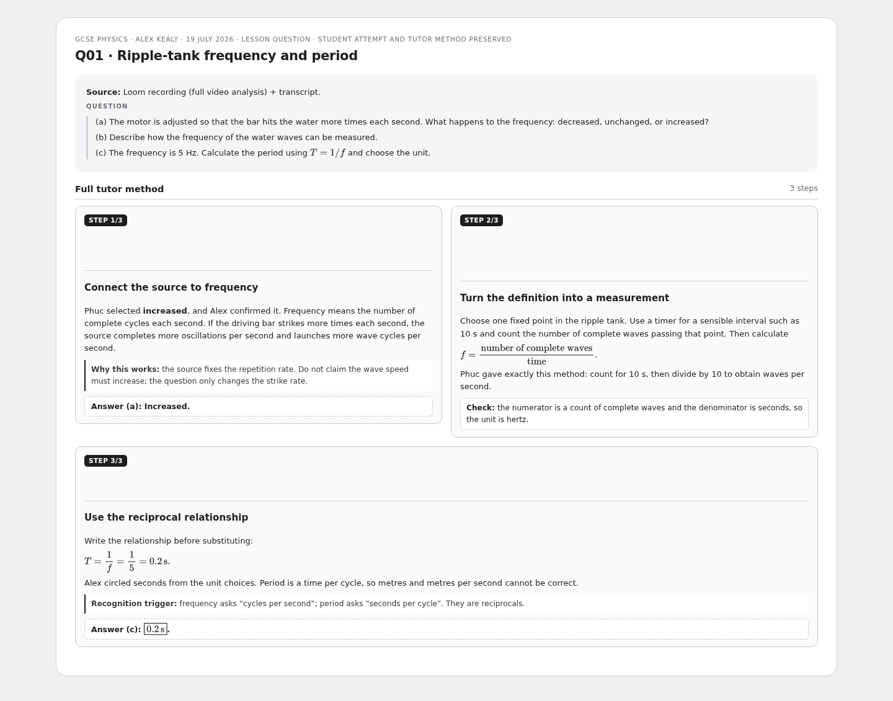
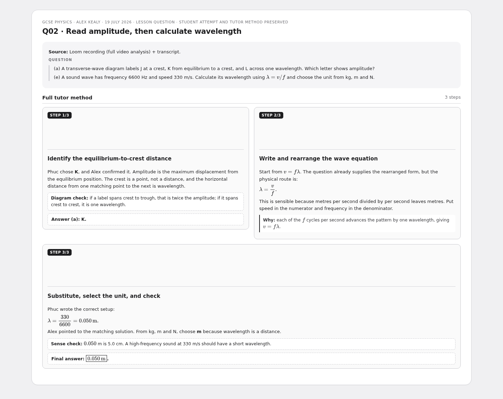
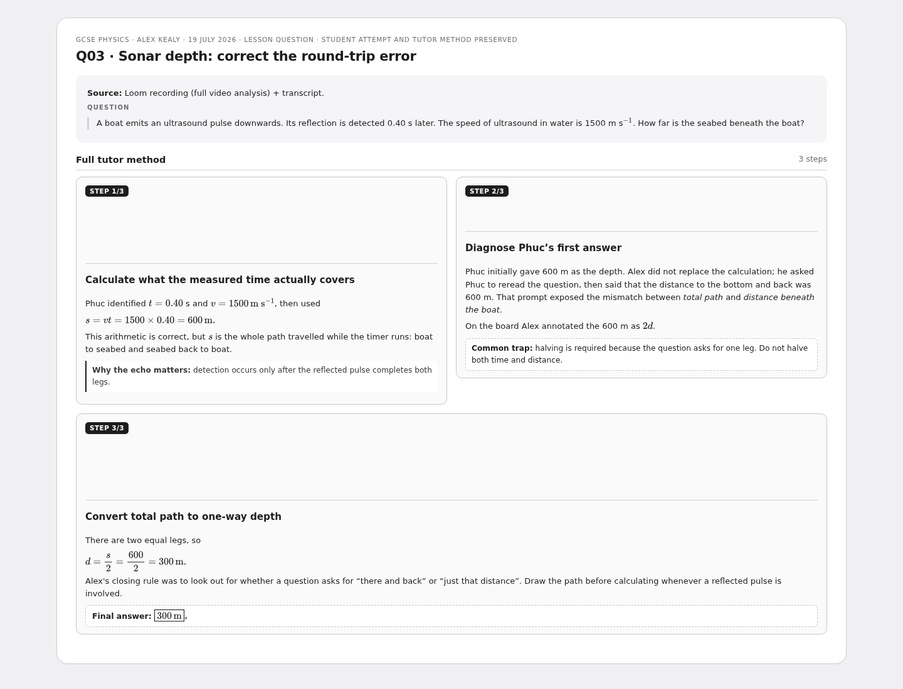
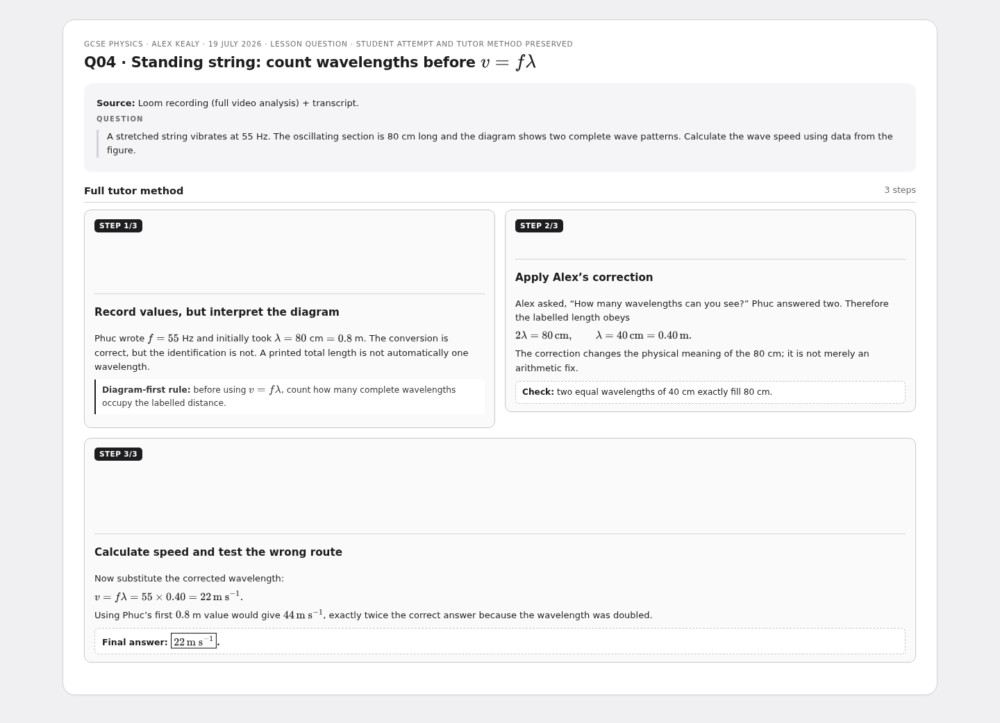
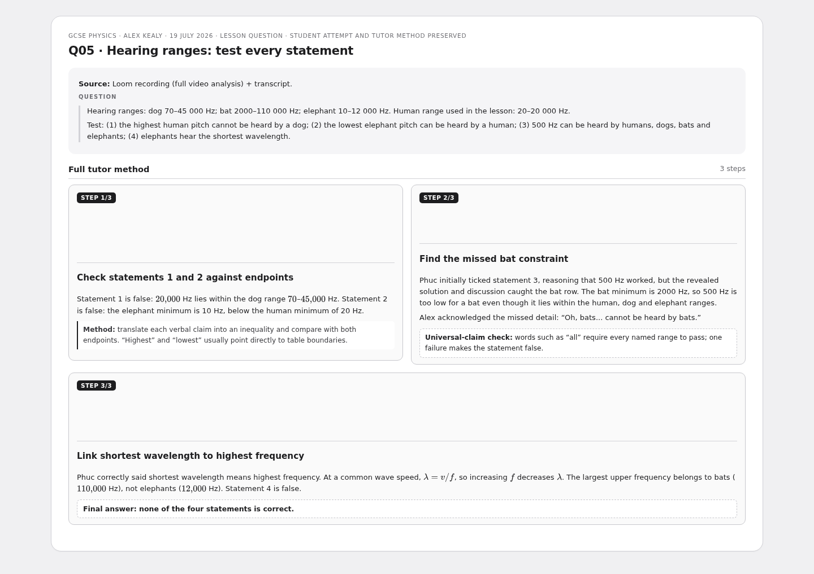
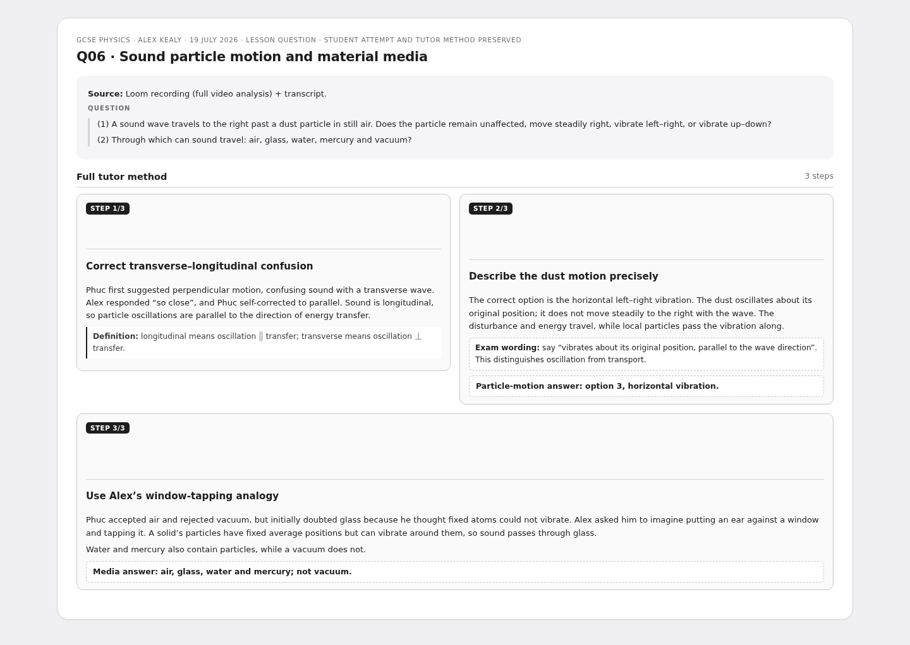

GCSE Physics — Waves, Sound & Spectrum Review
Six video-grounded S1-style multi-step cards. Each preserves the recorded student attempt, Alex’s correction and the complete method.
6 cardsGCSE PhysicsMulti-step
Q01 · Ripple-tank frequency and period

Q02 · Read amplitude, then calculate wavelength

Q03 · Sonar depth: correct the round-trip error

Q04 · Standing string: count wavelengths before $v=f\lambda$

Q05 · Hearing ranges: test every statement

Q06 · Sound particle motion and material media
